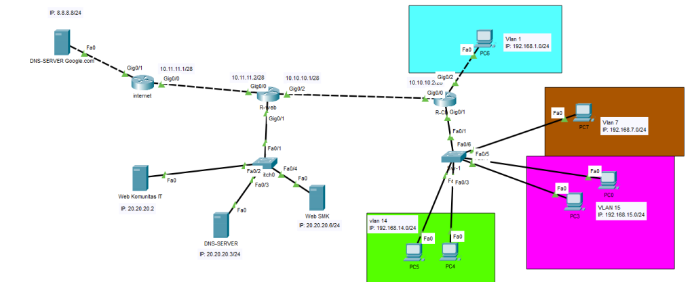
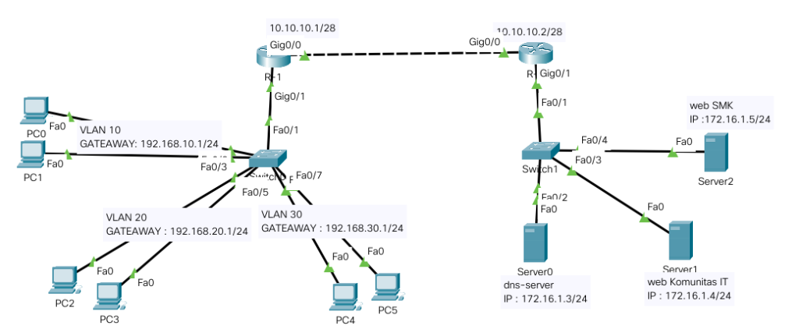
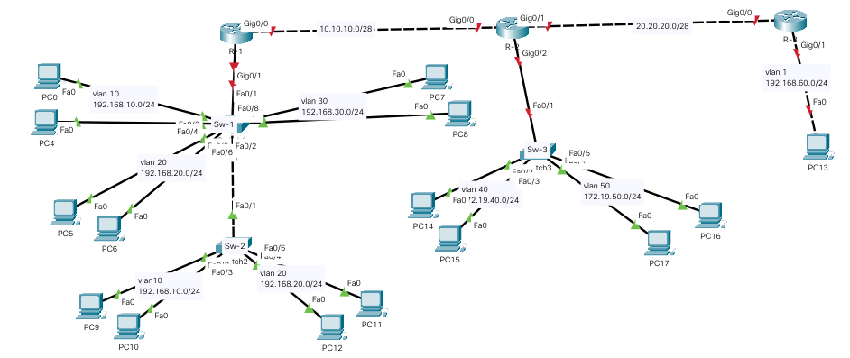

NAT CISCO

Pada lab kali ini saya akan membahas tentang konfigurasi NAT Dynamic pada cisco.
Nat dynamic pada cisco ini termasuk dalam tipe many to many NAT, dimana NAT ini dapat kita gunakan untuk mentranslasikan/memindahkan IP private dengan jumlah banyak menjadi lebih dari sutu IP public (sesuai kebutuhan).
Supaya lebih paham saya akan menjelasakan sambil konfigurasi, pada....
continue reading
EXTENDED ACCESS-LIST

Memblokir Packet ICMP dan HTTPS Pada kali ini mari kita belajar access list extended.
Jika access list standart memblokir semua packet maka pada access list extended kita dapat memilih packet. Keterangan untuk membedakan 2 jenis access list tersebut adaalah sebagai berikut; Standard access list merupakan filtering berdasarkan sourse address.
Maksutnya,Pada standart bergantung pada source atau....
continue reading
Routing STATIC OSPF

Pada lab kali ini kita akan belajar tentang routing Static pada cisco,
dimana ini dapat digunakan untuk menghubungkan beberapa Network yang berbeda.
Agar kalian lebih paham pada lab kali ini, saya akan menjelaskan sambil mengkonfigurasi.
Sebelum itu kita akan membuat layout terlebih dahulu, Untuk layout yang saya gunakan dapat kalian lihat pada gambar dibawah ini....
continue reading